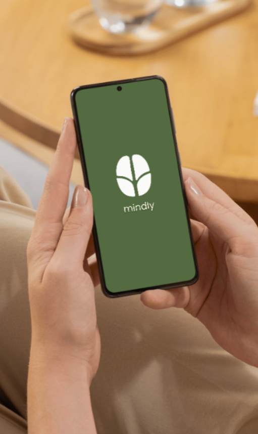
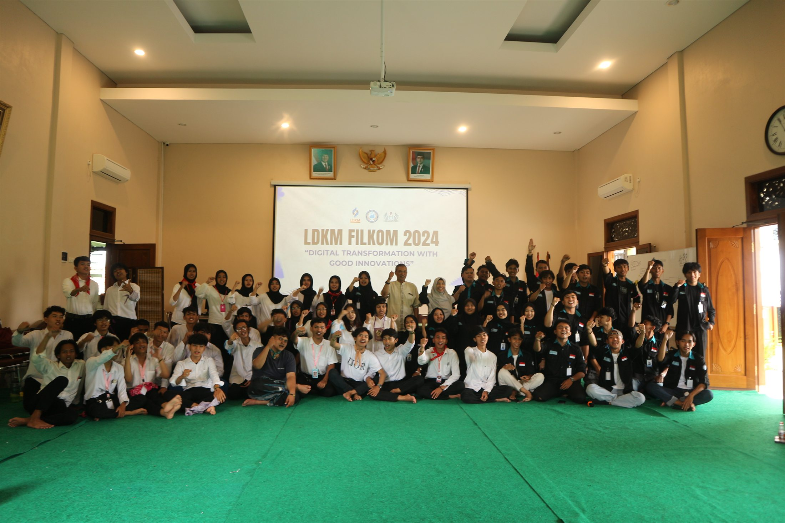
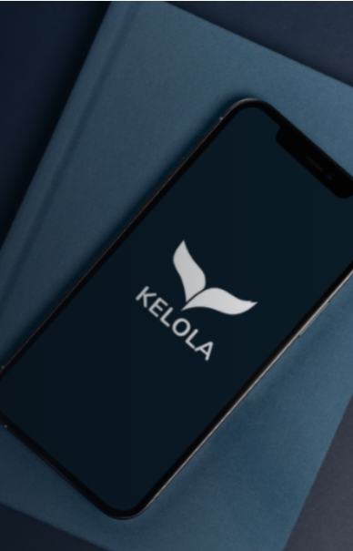
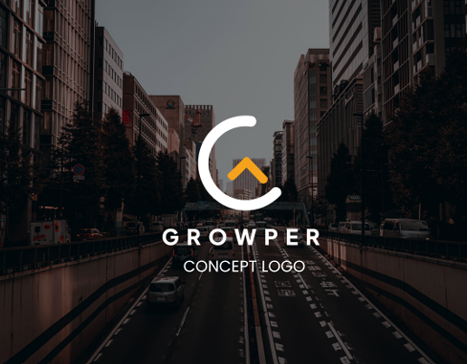
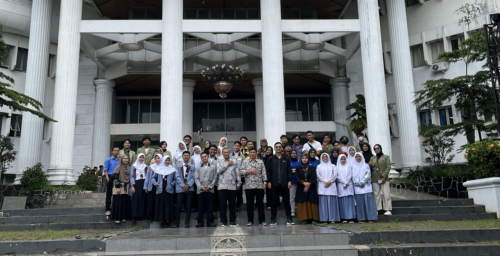
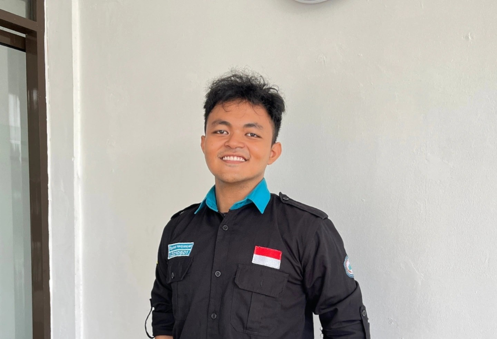

UI/UX · Aplikasi kesehatan mental
Mindly
Aplikasi kesejahteraan mental untuk mencatat suasana hati, menulis jurnal, dan membangun kebiasaan harian dengan antarmuka yang tenang.
Lihat studi kasusMembangun pengalaman digital yang berarti melalui desain UI/UX, pemahaman pengguna, dan eksekusi yang terarah.



Sebagai lulusan Ilmu Komputer, saya tertarik pada cara teknologi, desain, dan kebutuhan manusia bertemu. Pengalaman saya mencakup riset dan desain UI/UX, identitas visual, pemasaran digital, serta koordinasi tim dan acara.
Saya senang memahami masalah terlebih dahulu, menyusun langkah yang jelas, lalu bekerja bersama tim untuk mewujudkan solusi yang bermanfaat.
Beberapa proyek terpilih yang menunjukkan proses saya dalam merancang pengalaman, menyederhanakan informasi, dan membangun identitas visual.

Aplikasi kesejahteraan mental untuk mencatat suasana hati, menulis jurnal, dan membangun kebiasaan harian dengan antarmuka yang tenang.
Lihat studi kasus
Platform untuk transaksi, investasi, dan pengelolaan keuangan yang membantu pengguna memahami serta mengatur kondisi finansialnya.
Lihat studi kasus
Dashboard yang mengubah metrik kinerja karyawan menjadi informasi yang lebih mudah dibaca untuk pengelolaan pensiunan Yakes Telkom.

Identitas minimalis dengan bentuk geometris, tipografi bersih, serta palet hijau dan navy untuk membangun kesan modern dan tepercaya.
Lihat proyek
Audit dan perancangan ulang berdasarkan lebih dari 500 ulasan Play Store untuk memperbaiki navigasi dan alur pemesanan.
Lihat studi kasus
Identitas visual untuk merek yang berfokus pada pertumbuhan, dari eksplorasi logo hingga pilihan warna, tipografi, dan penerapan media.
Lihat proyekIdentitas visual lainnya

Pengalaman mengelola acara memperkuat kemampuan saya dalam menyusun rencana, mengoordinasikan tim, dan menjaga pelaksanaan tetap terarah.
Program kepemimpinan dua hari dengan tema transformasi digital dan inovasi bermakna.

Memimpin rangkaian kegiatan tingkat RW untuk warga dan bazar yang melibatkan mitra lokal.

Program tentang kewirausahaan, keuangan, dan inovasi di sektor pertanian serta peternakan.

Memimpin studio yang memetakan alur pelanggan sebelum merancang solusi seperti website, identitas merek, atau digitalisasi alur kerja untuk usaha kecil.
Lihat prototipe website
Mengoordinasikan proses pengembangan anggota dan program pelatihan, serta membangun lingkungan tim yang suportif.

Menjadi presiden pertama BEM FILKOM, memimpin organisasi, mengelola program kerja, dan membangun kolaborasi internal maupun eksternal kampus.

Merencanakan dan mengoordinasikan acara tingkat lingkungan yang menjangkau lebih dari 500 rumah tangga.
Membimbing siswa dalam teknik vokal, ekspresi musikal, dan pertunjukan, sambil mengembangkan disiplin, kreativitas, dan kerja sama tim.
Jika pengalaman saya sesuai dengan kebutuhan tim Anda, saya senang untuk berdiskusi.